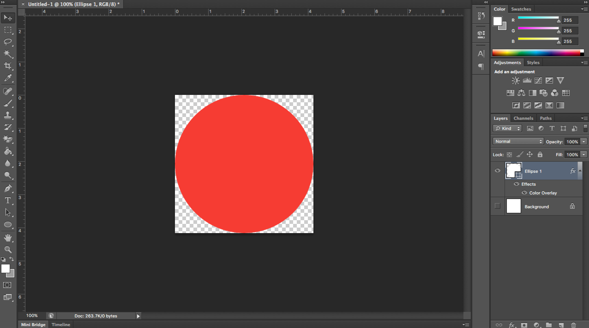
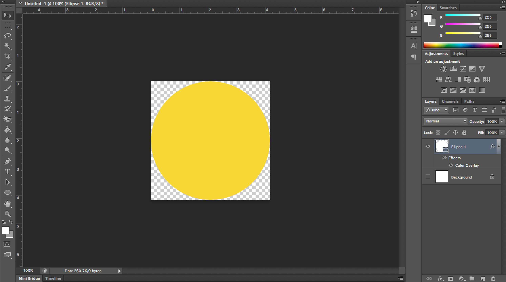
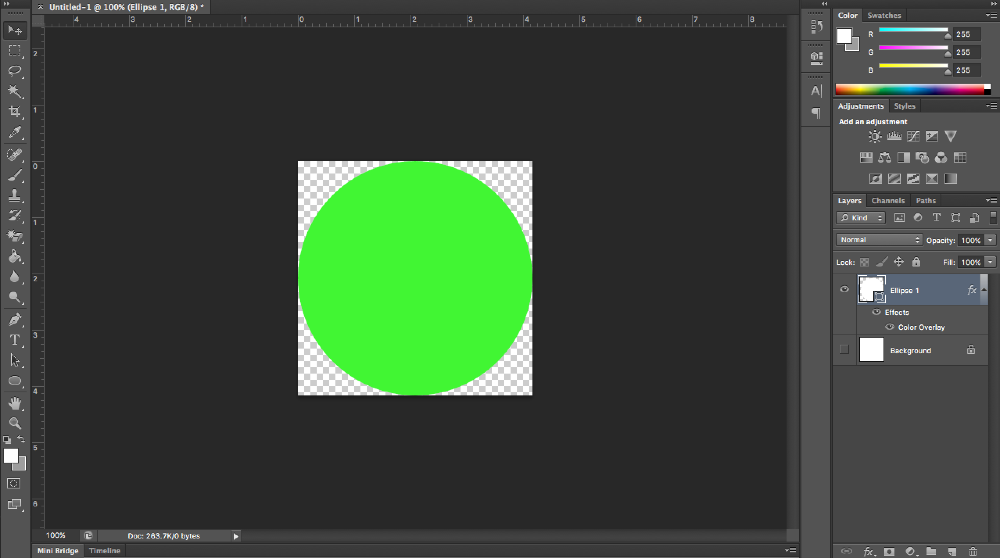

(i) - Make a list of required assets.
For this question I was asked to crete an animated set of "Traffic Lights" using JavaScript.
From the get-go I knew how to do this. I would need some simple coloured circle images then I could easily change these images on the page.
I would need:
- A red circle image.
- An amber circle image.
- A green circle image.
I started by booting up PhotoShop and producing some basic assets.



(ii) - Describe where the assets would be best located.
With all web-based programming, it's important to stay organised. I like to keep images and other assets sorted in a neat directory structure.
For these images, I've saved them in:
Site > images > projects > traffic_lights > red-circle.png
Site > images > projects > traffic_lights > amber-circle.png
Site > images > projects > traffic_lights > greem-circle.png
This sort of file structuring is very useful. It allows you to manage your assets with ease and also helps the client's browser slightly with caching.
(iii) - Describe the structure of an array that could be used to handle the traffic light sequence.
Here's my array to control the lighting sequence.
var lightSequence = [
{red: true, amber: false, green: false},
{red: true, amber: true, green: false},
{red: false, amber: false, green: true},
{red: false, amber: true, green: false}
];
I decided to use an array of objects. Each object contains light states for each light.
So, for example, this array means it will be
RED / OFF / OFF first, then it will be
RED / AMBER / OFF, then it will be
OFF / OFF / GREEN
then it goes to
OFF / AMBER / OFF so that the sequence can go on.
When the user presses a button to start the sequence, I will progress through the array and reflect the states onto the lights with delays inbetween.
(iv) - Write a script to produce an animation of a set of traffic lights such that the lights change in the standard sequence each time the button is clicked.
Written by James Latham